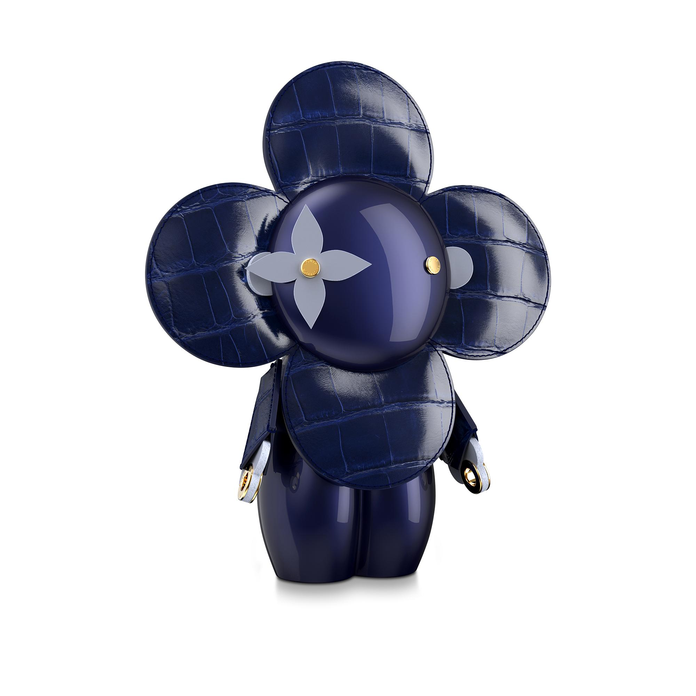

Site de Exemplo
A Louis Vuitton é uma empresa especializada na produção de bolsas e malas de viagens, feitas em couro e lona, bem como na sua comercialização. Produz e vende também vestuário, sapatos, relógios, joias, acessórios, óculos de sol e livros.
É uma das principais empresas da holding LVMH sediada em Paris, França. A empresa tem como diretor criativo o estilista Nicolas Ghesquière. Louis Vitton também utiliza figuras proeminentes em suas campanhas (mais notavelmente a supermodelo Gisele Bündchen, a cantora Madonna, a atriz Uma Thurman e o ex-atleta Pelé).
A Louis Vuitton foi considerada a marca de luxo mais valiosa de 2016, segundo o ranking BrandZ da Millward Brown, avaliada em 28.508 milhões de dólares. Em 2017, também apareceu listada como a amrca mais valiosa da França, com avaliação em 35,505 bilhões de dólares.
Em 2022, a empresa lidera o ranking "Poderoso do Varejo de Luxo", da Deloitte, que reúne as 100 marcas mais relevantes do segmento no mundo.
Atualmente trabalham 9.671 pessoas para a Louis Vuitton. Sua missão é fazer da viagem uma experiência pessoal e única. Os seus valores, que não mudaram desde o ano de sua criação, são: originalidade, espírito "avanat-garde", qualidade, "saber fazer" e paixão.
Seus produtos são vendidos exclusivamente em Portugal, Brasil, França, Estados Unidos, Inglaterra e Argentina. A política de distribuição da marca pode ser definida como "cativa", pois alia uma procura grande a uma rede de distribuição bastante seletiva.
A marca investe no desenvolvimento da sua matéria-prima e fabricação. Busca couros e lonas mais macias e mais leves. Cada tipo de produto utiliza diferentes tipos de couros, como por exemplo, o couro taiga, mais discreto, e por isso utilizado na linha de produtos masculinos.